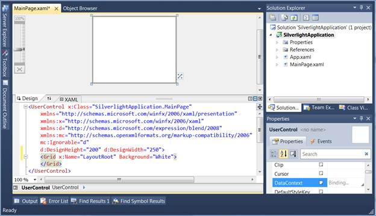
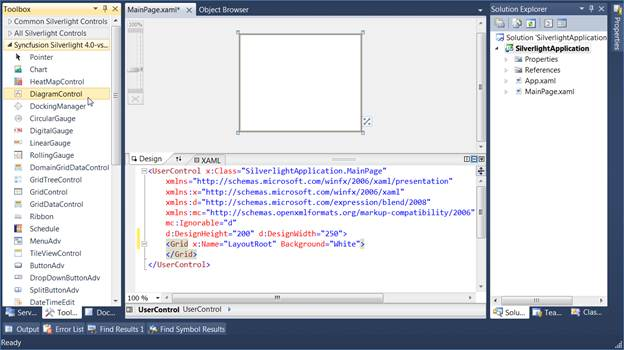
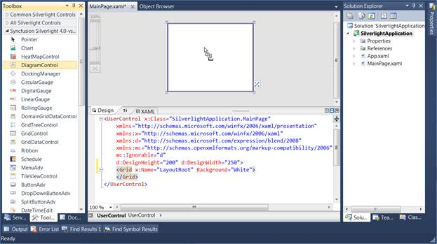
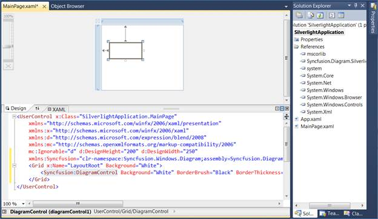

The Diagram Control can be added to the application using designer.
The following are the steps to create Diagram Control through Designer.
1. Open the XAML page of the application.

Figure 13: XAML page
2. Select Diagram Control from Toolbox.

Figure 14: Diagram Control
3. Drag the Diagram Control onto the Designer.

Figure 15: Drag the Diagram Control onto the Designer.
4. DiagramControl is added to the Page and also the assembly reference is added to the Project file.

Figure 16: Project file
Kindly refer to Add Diagram Model to the Diagram Control and Add Diagram View to the Diagram Control to add the model and view to the control.